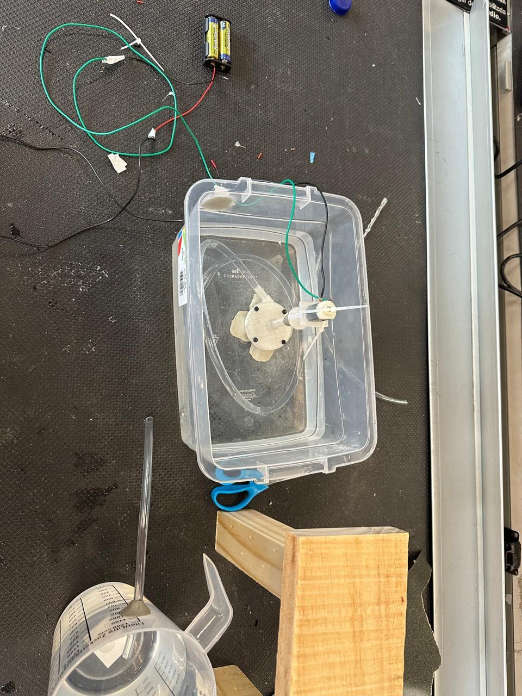
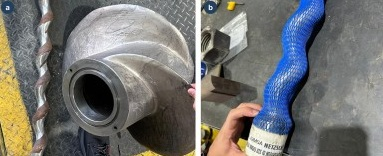

Kratos Formula SAE
I work on the chassis within the Design & Manufacturing subsystem, from SolidWorks models to the workshop.
My role on the teamI study mechanical engineering at Universidad EAFIT. With Kratos Formula SAE, I design vehicle parts in SolidWorks and help make them in the workshop. I’m especially interested in energy and automation.
I work on the chassis within the Design & Manufacturing subsystem, from SolidWorks models to the workshop.
My role on the team
What limits the lift of a battery-powered pump? We built the impeller, measured its flow and traced the losses back to the drive.
Explore the pump
Two carriages on parallel rails move one table in two directions. Follow the linkage through a 50 mm square.
Explore the router
We compared two hydrogen-HVOF coatings after a visit to EPM’s workshop in Medellín.
Read the coating studyI work on the chassis within the Design & Manufacturing subsystem. I model parts, weld, turn components on the lathe, bend material and 3D print. I coordinate with the other subsystems so the parts meet the vehicle’s requirements.
I hold the Talento EAFIT scholarship, awarded in January 2025 for academic performance. Alongside Kratos, I take part in a research project on thermal spraying.